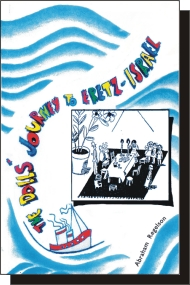
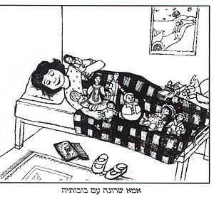
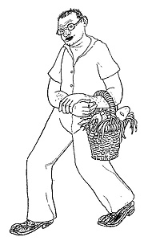
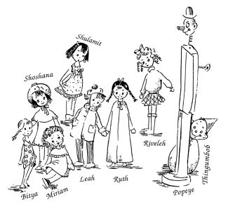
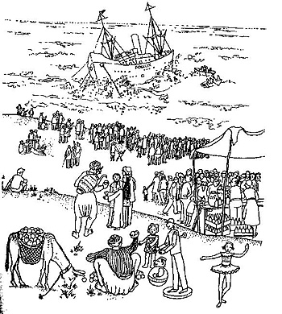
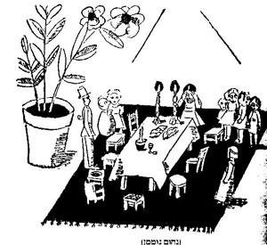
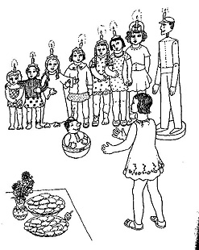
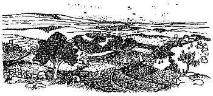
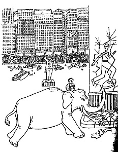

|
Suggestions for Classroom Activity following the Parade of Books Project 2006-7
(Translated and adapted to English from the Hebrew)
The Dolls' Journey to Eretz-Israel (Masa HaBubot l'Eretz-Israel)
By Abraham Regelson
Prologue, Epilogue and English translation by Sharona Regelson Tel-Oren
English translation of poetry: Naomi Regelson Bar-Natan
Illustrations: Aryeh (most of the book), Bina Gevirtz, Aryeh Navon, Ari Ron,
Shlomit Oltchik.
Publisher: Biblio Books, Israel [2004, 103 pages]
 |
 |
About The Book
The book was originally written as a story in installments for Davar liYladim, (the children's supplement of the newspaper Davar) in the year 1934, and issued in book form in 1936, in Tel-Aviv. It was a book well-loved by its readers, many of whom could recite from it by memory.
Rereleased in a new edition (both in the original Hebrew and in English translation) by the author's daughter, Sharona Tel-Oren, who is also the book's heroine, some 70 years after it was written. Sharona relates that she self-published the books, rejecting various publishers' demands to modernize the language. Even when it was first written, she claims, Abraham Regelson would not talk down to children, and this is what gives the book its special flavor. Appropriate for Grades 4-6, both because of its language and its historical connections. It's important to read it together with the pupils, not only the main text of the book, but Sharona's story as well. Her Prologue and Epilogue unfold the family history which intertwines with the book's background, and with the joys and sorrows of building a life in the Land of Israel.
Using finger-size dolls, Sharona Tel-Oren lectures in Hebrew or English before classes and mixed groups, providing a fascinating presentation of the book. It is available in some bookshops, through Amazon, and also directly through her. (Tel. 08-6460371).
The book is a mix of reality and fantasy. Sharona and her family live in America when the decision is taken [in 1933] to immigrate to Eretz-Israel. Sharona's dolls, which would take up too much space in their baggage, must be left behind with her friend Phyllis. The family arrives at Eretz-Israel, and now the doll fantasy begins. All nine dolls yearn for their Imma Sharona and decide to follow her to the Land of Israel. Their adventure-stories along the way actually describe many of the family's experiences during their journey.
The dolls, with Phyllis' help, set out on their long journey, and many are their adventures and hardships until their arrival at long last.
On their way the reader encounters places in America and personages of those times. For example, the city of New York with its Jewish community, the pilot who offers the dolls a flight in his plane, the New York subway system with its elevated sections (rarely seen today), the Bronx zoo, the ocean voyage, and more.
Each of the nine dolls has a distinct personality, and a background relating to their journey. After many trials and tribulations both in America and on the ship crossing the ocean, they arrive at the shores of Eretz-Israel. While rejoicing over their reunion with their Imma Sharona, they find it difficult to adjust to the strange and unfamiliar reality they meet there. As time goes on, they decide that they want to return to America, but finally realize how strong their ties are with their historic homeland, and decide to stay after all. And thus declares Sharona: "Our souls are entwined with the soul of this land: her skies, sun, sea and earth have endeared themselves to us in all their varicolored beauty. Here we shall remain, and dwell and toil!"

Imma Sharona with her dolls
Illustrated by Shlomit Oltchik, P. 101
Recitation and Dramatization:
As the book was written originally in installments, and later broadcast on the radio in segments, almost every chapter has a story which can stand by itself. Thus the book lends itself particularly well to recitation before or with the children, and to dramatization, while explaining certain unfamiliar words.
How does the author characterize personalities?
Discuss with the pupils: How are characters personalized? (Appearance, behavior, past experience, interests, talents, etc.).
On character personalization, see the book, "Mishney Tzidei HaMaba"
Published by Tav-Lamed, 1996, Pages 114, 189-196.
The teacher can trace with the pupils how throughout the book the author chooses aspects of physical appearance or behavior to describe the characters, and what these descriptions teach us about them.
For example,

Picture of the father/author:
Illustrated by Aryeh, opp. P. 1
With humor, the author describes himself, his family, and other characters of the story – both humans and dolls. His descriptions of their appearance and behavior teach us about their characters.
This is how he describes himself: (page 1)
Call me Abba. Bespectacled am I, and my shoes – always dusty. I polish them every Tuesday and Friday, but that doesn't help one bit, because, you see, I live on a sandy beach. Should you happen to meet a bare-headed Tel-Avivian, glasses perched on his nose, shoes all dusty, and on his arm a shopping basket spilling over with beets, onions and radishes, you'll know it's me bringing vegetables home, food for the kids...
Sections such as this one can be read in the class, followed by a discussion of the personality traits that are revealed by the author about himself and later about the other characters.
The Dolls:

Illustrated by Bina Gevirtz, P. 103
In the first chapter, each of the dolls is introduced, in terms of appearance and personality traits. As the book progresses, the reader can recognize their behavior and characteristic speech, for example in pages 15-18 where the dolls plead their case before Phyllis, each according to personality. Throughout the book, their character traits are expressed through the various situations, reinforcing the descriptions presented at the beginning.
We may suggest that each pupil choose a favorite character, following behavior patterns described all along, and then presenting a character-dramatisation before the class.
Zionism, Jewishness, and settling Eretz-Israel
The book describes – through the journey of the dolls, who represent Sharona's family – Jewish yearning for Israel, the difficulties of aliya and integration, love of the land, transforming and blooming the desert.
In the Epilogue of the present edition, Sharona tells the story of her family, starting from her parents' emigration from Eastern Europe to America, through their aliya to Eretz-Israel and the hardships of absorption. Excerpts from the Epilogue may be read with the pupils, comparing aliya in those days with aliya to Israel today.
Sample excerpts from the book may be read, demonstrating how they relate to the historic reality of the family's experience. For example: The book tells us what life was like in Tel-Aviv during the 1930's. The family lived on the sands at the seaside, and from their home could see where the future port of Tel-Aviv was to be.

Illustrated by Aryeh, P. 72
The opening of the Port of Tel-Aviv can be a possible subject for discussion, as well as a description of life in Tel-Aviv in those days.
Jewish celebrations;
These excerpts can be read in the classroom and then compared with today's familiar norms.
The Sabbath
Description of the Sabbath, Pages 7-9

Illustrated by Nahum Gutman, P. 8
The Hanuka holiday
Reading selection describing Hanuka, Pages 58-62

Illustrated by Aryeh, P. 63
Tu B'Shvat
Reading selection describing Tu B'Shvat, Pages 68-70

Illustrated by Aryeh, P. 85
The humor in the book
There is so nuch humor throughout the book. Here and there one might have to look up a difficult word or expression in order to fully appreciate the humor; it's well worth the effort! One of the funniest chapters is Chapter 10, where Aunt Shifra's letter to Sharona describes the dolls' adventures in
New York. We can read this chapter together with the pupils, and then ask them to tell in their own words, for example, the story of Grompax the elephant's chase through the streets of New York, with Thingumbob riding on his head, between his ears. Pages 39-43.

Illustrated by Aryeh, P. 41
Names and Interpretations
The two "brothers" to the dolls [bubot-bov, after dubot-dov] whose names were Hebraized in the editions after Israel became a state, from Thingumbob to Milta Zotarta (which is Aramaic for "insignificant little one") and from Popeye to Balt Ayin (meaning "bulging eyes"), retain their original "Anglo" names in the English version of the book.
We can discuss the renaissance of the Hebrew language, and about the changes which have taken place in Hebrew as a spoken language.
A bit of history in the choice of characters:
Why was the name of the pilot Charles Lindbergh from the first edition changed in later editions to one of the Wright brothers? We can read in the Epilogue why the author decided to make this change, and to look up who these historic characters were.
I like:
Many of the chapters in the book deal with Love and with Longing, and to both of these, grownups, as well as children, can relate.
All children, not necessarily new immigrants, have a memory or a memento of a former possession that they long for. This is a topic worth discussing with them before reading the book, or during its presentation.
We can ask the children to bring to the class a toy which has stayed with them from a very young age, and to tell about it. Or, to answer this question:
Do they have any possession that is hard for them to part with? Tell or write about it.
Activities for classes with children who are newcomers to a country
In a land of immigrants like Israel, there are many children who left beloved possessions behind, and who still cherish a precious memory of something they sorely miss.
- Tell about the country you came from.
- How is the country you came from different from the one you live in now?
- What do you miss most of all?
- Tell about the journey to your new country, and ask your parents to help you by sharing their memories.
- Is there a toy or item that you brought with you from your former country? Bring it to the class and tell about it.
ROOTS
Pupils who are working on their "Shorashim/Roots" projects, can relate to the book in terms of their own aliyah and adjustment when settling in.
Perhaps they can try to tell their family's story using an item that has come down to them through several generations, like the memory of Sharona's dolls. whose story she tells to this day.
THE BOOK'S LANGUAGE
The original Hebrew version is written in semi-Biblical language, and in the English translation an effort was made to preserve a similar traditional style.
Activity: Tell the meaning of the words or phrase in the first column either with the help of a dictionary or judging from the context. Add to the list some ten additional difficult words from the book, and write their meanings in the second column, as in the example given.
| bespectacled am I | I wear glasses |
| bicker | |
| scrawny | |
| enticing | |
| astonished | |
| a visored cap | |
| unanimous | |
| chauffeur | |
| somersaults | |
Development and suggestions for classroom activity: Dr. Aya Marbach, Dr. Rachel Izuz
This article was originally written in Hebrew at the initiative of the DafDaf website editors following the Israel Ministry of Education's Mitz'ad HaSfarim/The Parade of Books Project 2006-7 to foster quality reading.
English translation and adaptation by Sharona Tel-Oren, by permission of the authors and the DafDaf website editor Nira Harel.
See website: www.abrahamregelson.org/dollsjourney.php for background, excerpts, reviews, readers' comments. The books are available in both the original Hebrew and in English translation through Amazon in softcover, and from steloren@gmail.com in both hardcover and soft.
|